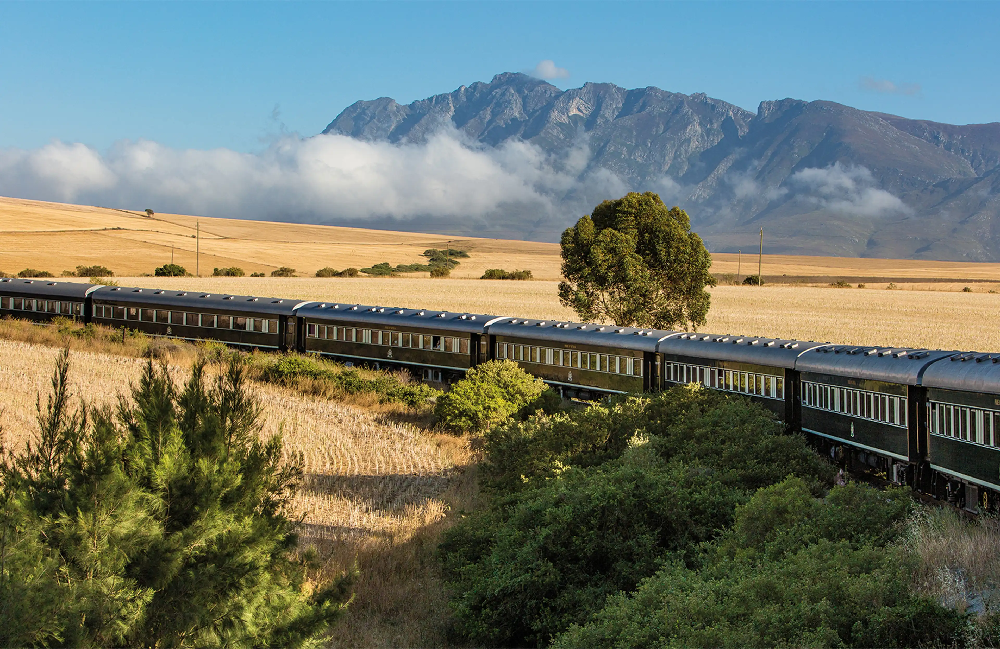
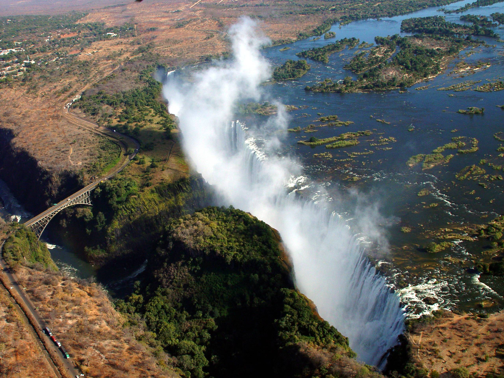
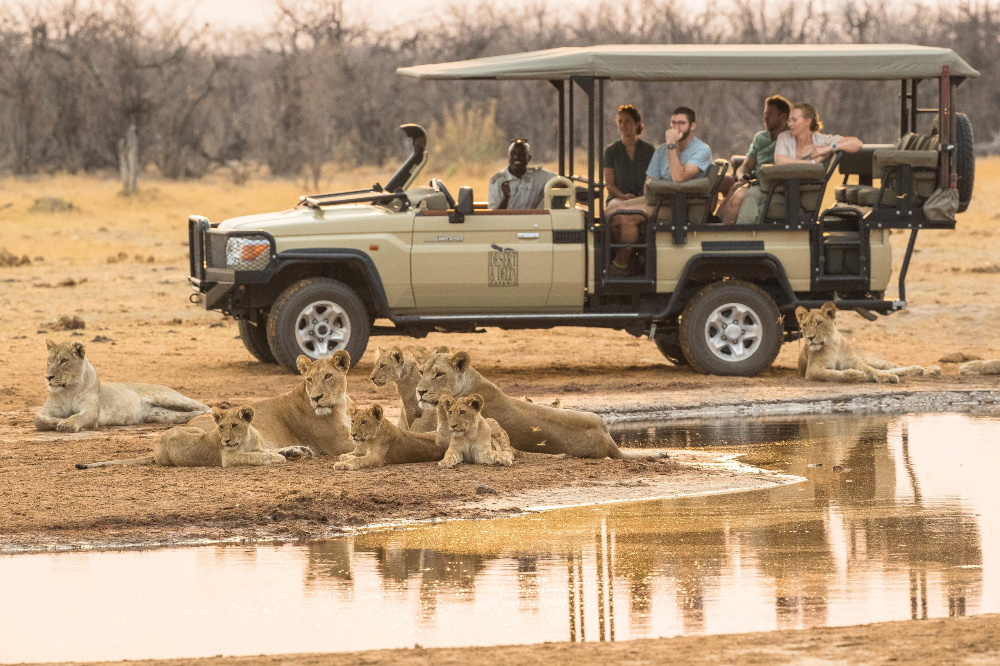
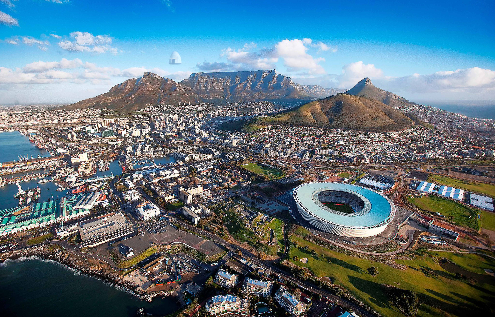
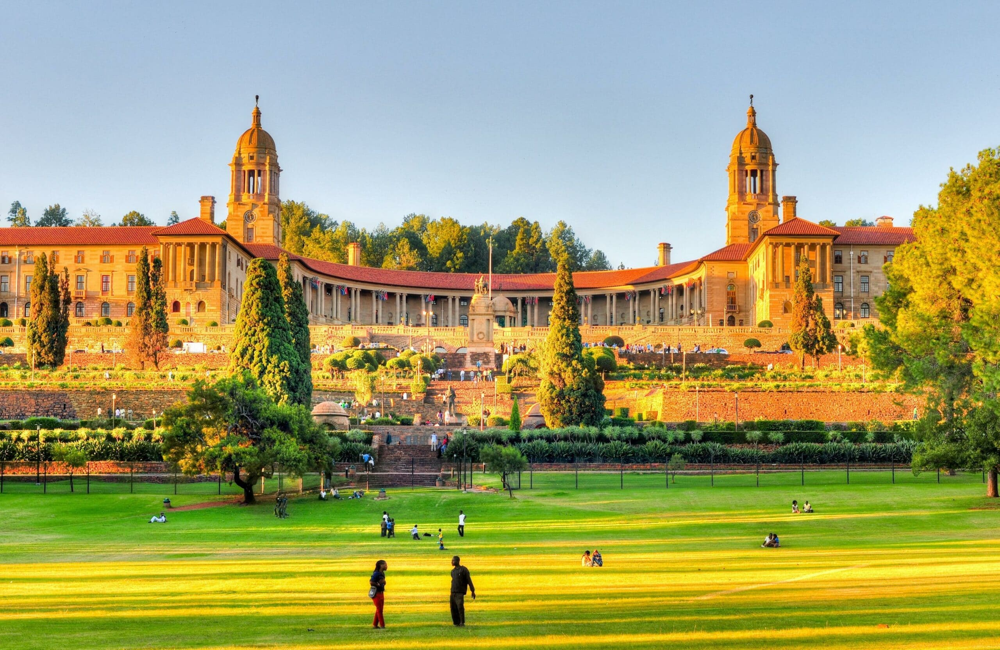
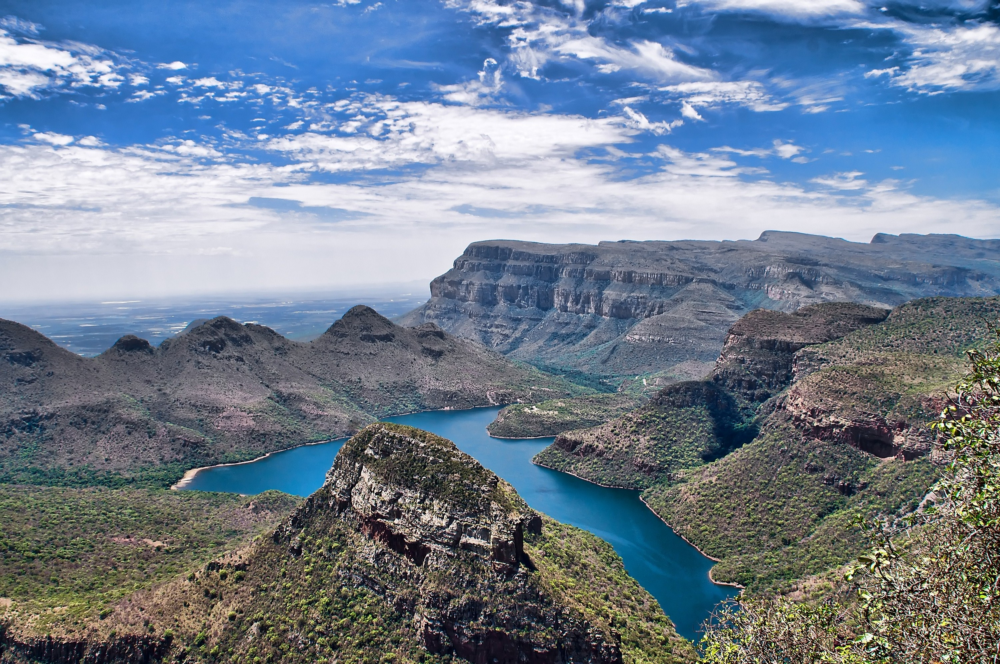
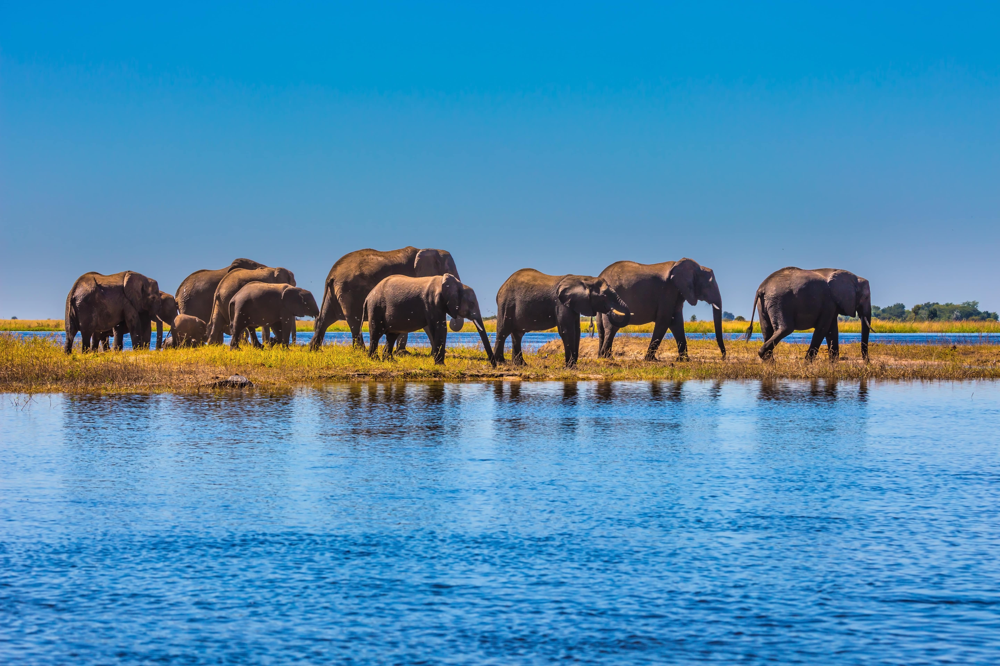
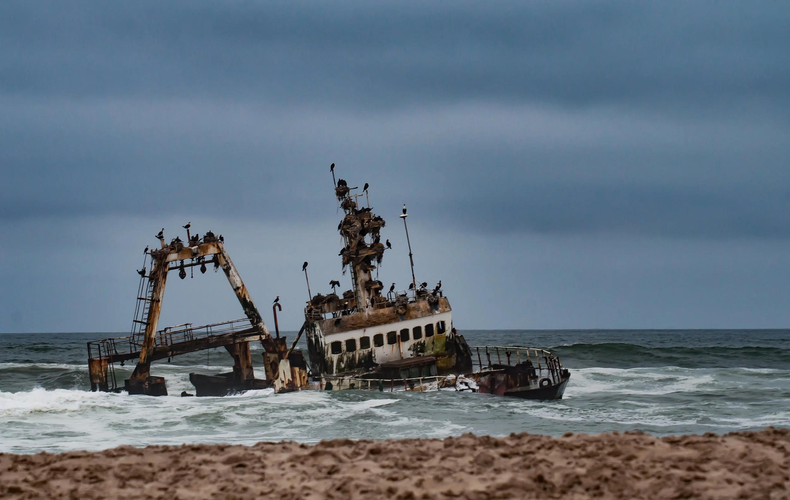
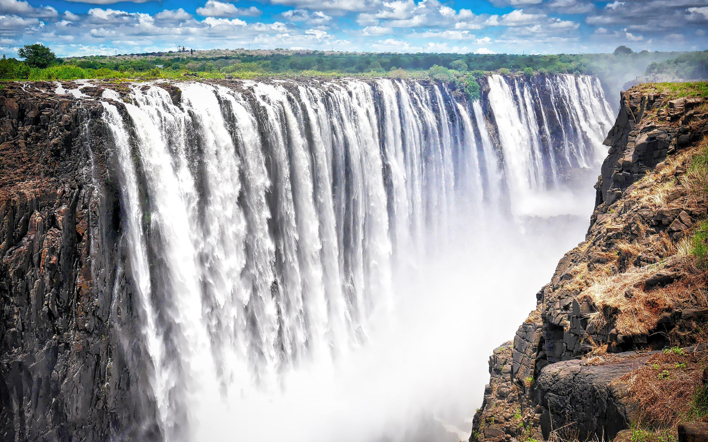

Relive the romance of a bygone era traveling on the world's most luxurious and historic train, the Rovos Rail. You'll spend three nights in Cape Town before a four-night Zambezi Queen wildlife and safari cruise in Chobe National Park. Revel in breathtaking scenery and marvel at mighty elephants, stealthy lions, and the legendary Victoria Falls before journeying through Zimbabwe and on to South Africa.
Learn More
Embark on a thrilling African adventure through South Africa, Botswana, and Zimbabwe. Begin in Johannesburg before boarding the Zambezi Queen for a four-night safari on the Chobe River. Witness incredible wildlife up close and marvel at the awe-inspiring Victoria Falls. Conclude with a stay in Greater Kruger National Park.
Learn More
Begin with an overnight stay in Johannesburg or an optional three nights in Cape Town. Fly to Kasane, Botswana, and embark on a four-night Chobe River cruise. Spend two nights at the majestic Victoria Falls before journeying to Tanzania for a luxury safari at stunning lodges in Tarangire, Ngorongoro, and the Serengeti.
Learn More
Discover South Africa's natural wonders on a journey from Cape Town to Victoria Falls. Explore Table Mountain, Boulders Beach, and the Cape of Good Hope before embarking on a Chobe River safari. Encounter elephants, giraffes, and leopards before concluding with two unforgettable nights at Victoria Falls.
Learn More
Begin with three nights in Cape Town before flying to Kasane for your Zambezi Queen safari cruise on the Chobe River. Explore Chobe National Park, home to one of the densest wildlife populations in Africa. Spend two nights at Victoria Falls, visit Soweto in Johannesburg, then fly to Greater Kruger National Park for daily game drives beneath breathtakingly clear skies.
Learn More
Take an unforgettable journey to Southern Africa's most acclaimed destinations. Sail the Chobe River aboard the Zambezi Queen and encounter Africa's iconic wildlife — elephants, leopards, and more — in their natural habitat. Venture to Greater Kruger National Park for extraordinary game drives through one of the continent's most celebrated wilderness areas.
Learn More
Embark on a classic journey through East and Southern Africa, exploring legendary parks teeming with iconic wildlife. Combine Kenya's renowned game reserves with a Zambezi Queen Chobe River safari and the thundering spectacle of Victoria Falls. Witness Africa's Big Five across Botswana, Namibia, Zimbabwe, and Kenya on this sweeping continent-spanning adventure.
Learn More
See the saga of Southern Africa's wild beauty — from Chobe safari drives and the thundering Victoria Falls to Namibia's towering red sand dunes and the hauntingly remote Skeleton Coast. Cruise the Chobe River aboard the Zambezi Queen and encounter extraordinary wildlife before venturing into one of Africa's most dramatic and untouched wilderness landscapes.
Learn More
Journey from Cape Town to the Chobe River to experience the full breadth of Southern Africa's breathtaking landscapes and wildlife. Explore Table Mountain and the Cape Peninsula before heading north to Botswana for a Zambezi Queen wildlife cruise, concluding at the legendary Victoria Falls on the Zimbabwe–Zambia border.
Learn More